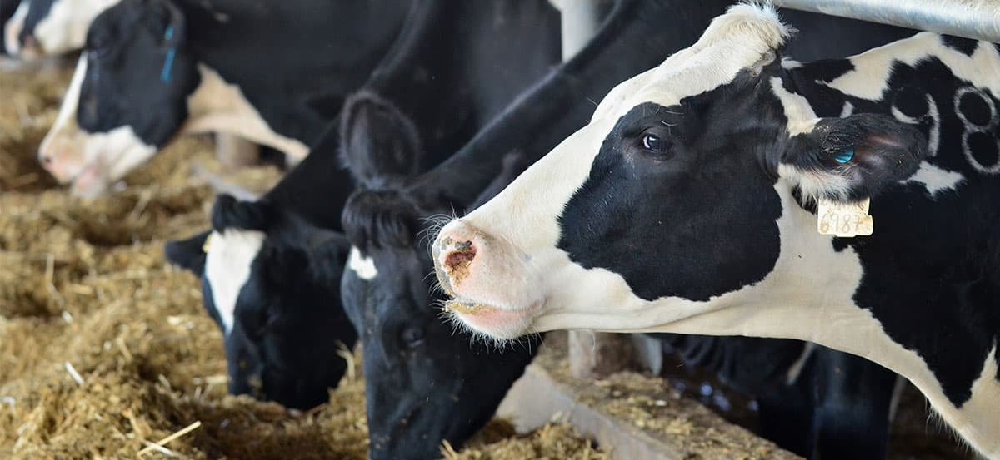
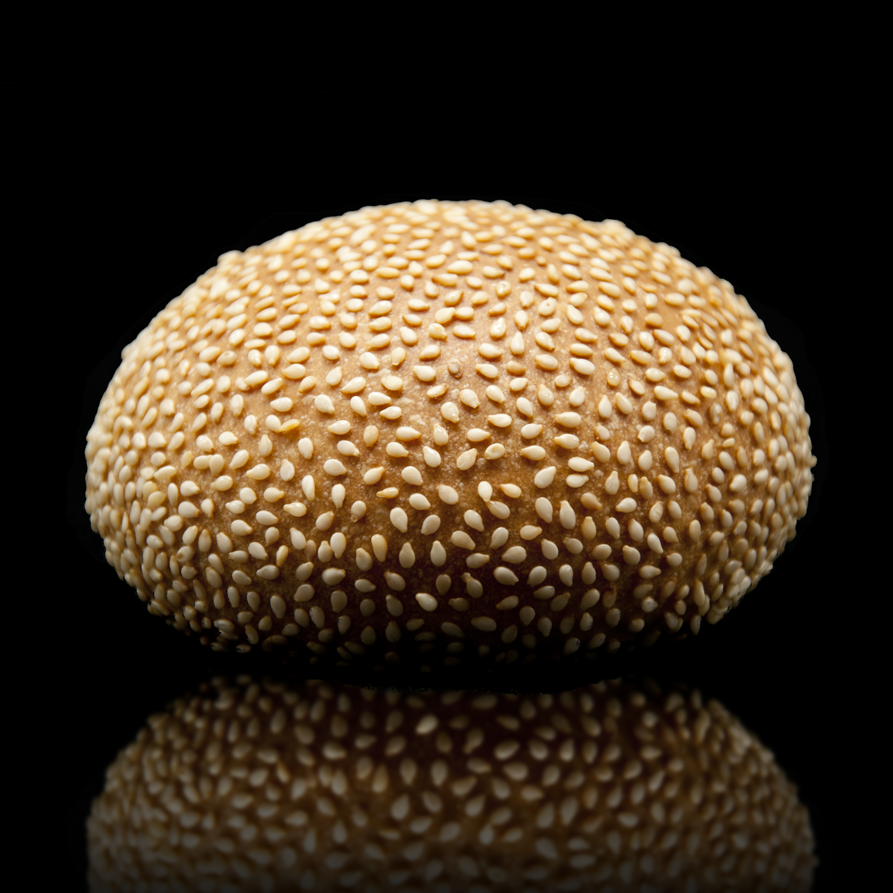
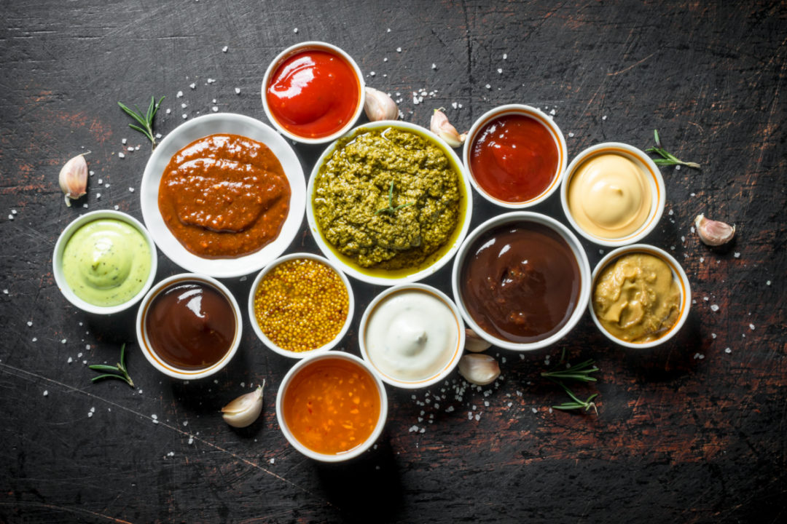

Our Story
In 2010, Brutus Burger House founder Nicolae Hegenski had the
chance to bring his cooking skills to perfection at the French Culinary
Institute in New York and he didn’t hesitate. Together with his wife Maria,
a restaurant-manager herself, he made his way across the pond to the big city.
They had one big dream: one day to open a restaurant in their hometown, Bucharest
and serve food crafted from local ingredients. Inspired by the American style of food,
they didn’t wait long and opened their first Brutus Burger House in Bucharest
in January of 2012. Their mission was high quality food made with local ingredients,
fresh products and attention to detail.
Why do we do this, you ask?
First of all because we want to promote the idea that you can cook any recipe
you want using healty ingredients sourced by local producers, thus supporting them financally.
Moreover, we do this because we have a passion for cooking, obviously.
And our only goal is to make YOU happy. ;)
All of our ingredients are produced locally.

Regional beef
Our beef at Brutus Burger House stands for two things: quality and regional origin.
That’s why we offer 100% juicy beef from a farmer from Transilvania for our guests.
The cows spend their lifetime breathing the fresh air of the Carpathian Mountains and
enjoy a happy life in the open countryside with more than enough space. By working
together closely with our farmer we make sure our guests at Brutus Burger House get the best
beef there is. And you can definitely taste it!

Housemade bread
We are extremely proud of our burger buns. Thanks to a homemade
recipe by founder Nicole Hegenski, our guests at Brutus Burger House can enjoy
the perfect buns, fluffy and tasty at the same time. We bake our buns fresh
every day so we can offer the best quality to our customers. Combined with our
regional beef, these two main elements lay the foundation for our burgers.

Own sauce recipes
Every burger at Brutus Burger House provides a unique flavor.
Main reasons are our delicious, homemade sauces.
To make them, we of course only use fresh products,
so we stick to our mission: to offer our guests the best quality possible.
From our secret Caesar's Death Sauce to our daily fresh made guacamole,
these sauces, combined with our beef and our buns, result in the unique taste
of our burgers.